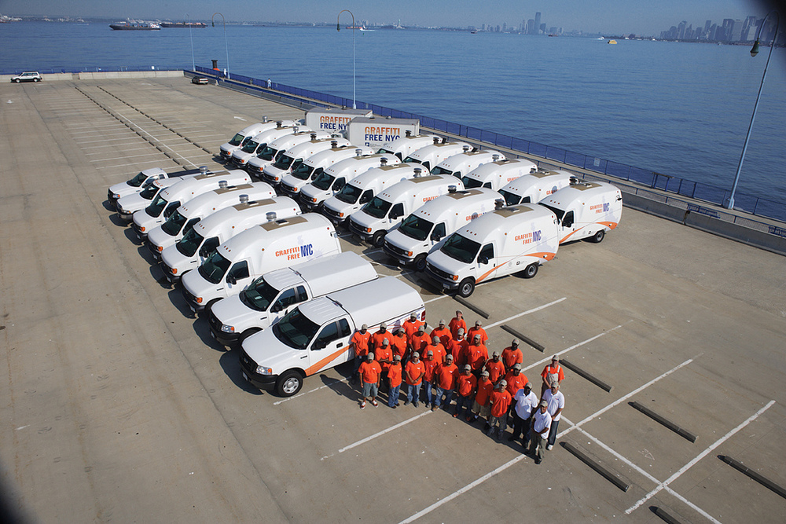

The Graffiti-free NYC Program is the first full-time, street-by-street graffiti removal service initiated by NYCEDC in 1999 in the City of New York. The objectives of Graffiti-Free NYC are to provide no-cost graffiti removal for the City, to create jobs for low-to-moderate income residents, and to enhance overall neighborhood aesthetics.  This site takes the advantage of 311 graffiti service requests data from 01/01/2010 to 12/31/2015 from NYC Open Data and provides a visualization of graffiti complaints using Leaflet, ArcGIS, CartoDB, Bootstrap, and dc.js.
Let's take a look at the total number of graffiti complaints by quarters, by day of week, by boroughs, by land uses, and by months. There are slightly more complaints in quarter 2 (April, May, and June) than other three quarters. You can have a better sense of the yearly pattern with the monthly chart below. Meanwhile, more complaints arise on weekdays and in mixed use areas. Brooklyn outperforms the other four boroughs while Staten Island has the least complaints.For number of complaints by quarters, boroughs, and land uses, we might be more confident to conclude that larger number of complaints means more graffiti created. For complaints by day of week, however, it may also result from people's tendency to complain on weekdays as opposed to weekends (if for properties near their workplace). Explore and interact with the charts!
The neighborhoods with higher graffiti complaints are mainly located in lower Manhattan (Chinatown, East Village, SoHo, Lower East Side) and Washinton Heights, most places in Queens, Brooklyn and Bronx that are close to Manhattan (Bedford, Williamsburg, Greenpoint, Hunters Point, Astoria, Mott Haven, Hunts Point, etc), and some other places in outer boroughs (Sunset Park, Bay Ridge, Borough Park, East New York, Jackson Heights, Elmhurst, Jamaica, Westchester, etc).